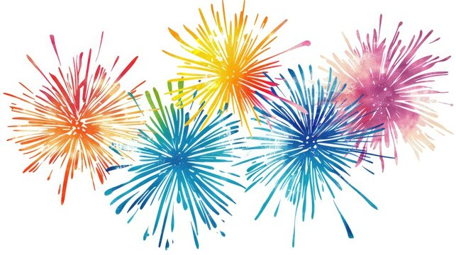

Date: January 1, 2025
Description: The New Year is the time or day at which a new calendar year begins and the calendar's year count increments by one. Many cultures celebrate the event in some manner. In the Gregorian calendar, the most widely used calendar system today, New Year occurs on January 1
New Year's Day in the Philippines is celebrated with enthusiasm and colorful customs. As midnight approaches, families gather for a grand meal called "Media Noche," symbolizing prosperity for the coming year. Filipino households often display 12 round fruits, believed to bring good fortune, and wear polka-dotted clothes as symbols of wealth. Firecrackers, loud music, and noisemakers are used to drive away evil spirits and welcome good luck. Traditional practices like jumping at midnight to grow taller, scattering coins around the house for abundance, and avoiding sharp objects to prevent "cutting" one's luck are observed. It's a festive and hopeful time, marking a fresh start filled with aspirations for a better year ahead.